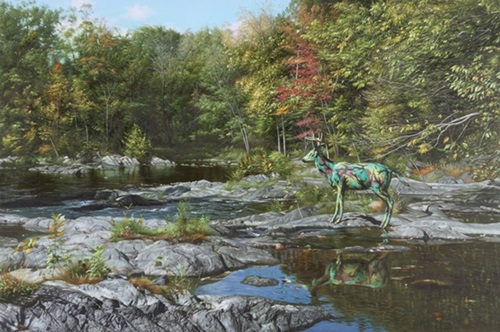
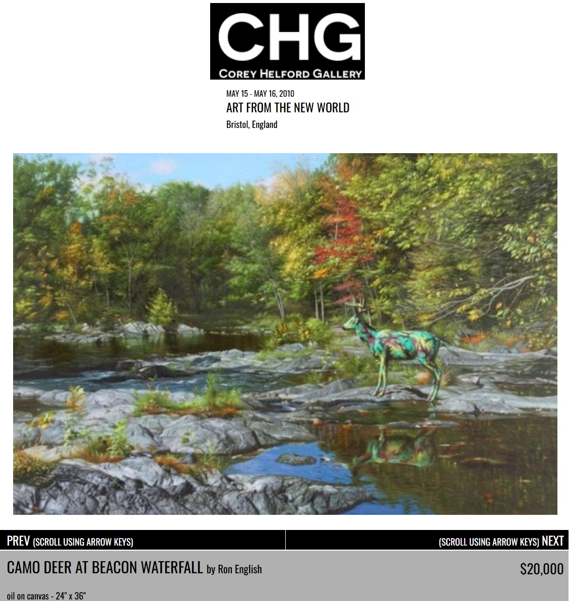

Exhibitions
Art From the New World, Bristol Museum and Art Gallery, Bristol, England, UK, May 1–August 22, 2010.
Status Factory – The Art of Ron English, Frank M. Doyle Arts Pavilion (Orange Coast College), Costa Mesa, California, US, November 12–December 17, 2010.
Literature
Ron English, Status Factory: The Art of Ron English (San Francisco: Last Gasp of San Francisco, 2014), p. 98. ISBN 978-0867197891.
Ron English, Original Grin: The Art of Ron English (Paris: Cernunnos, 2019), p. 164. ISBN 978-2374950938.
Notes
This work appears in Arrested Motion’s preview of Art From The New World, curated by Corey Helford Gallery for Bristol Museum and Art Gallery, available here, accessed April 11, 2026.
It also appears on Corey Helford Gallery’s artwork page for Camo Deer at Beacon Waterfall, available here, accessed April 6, 2026.
The work is additionally documented in Arrested Motion’s opening coverage of Ron English’s Status Factory at the Frank M. Doyle Arts Pavilion, available here, accessed April 11, 2026.
This composition was later adapted by the artist as a related giclée print issued as Camo Deer At Beacon Waterfall; the cited Art Collectorz page describes it as a 27 × 19.25 inch edition of 100, signed and numbered by the artist, published by Corey Helford Gallery. See the related print on Art Collectorz.

Dimensions are approximate and are based on visual comparison and available documentation.
Ancillary Documentation
